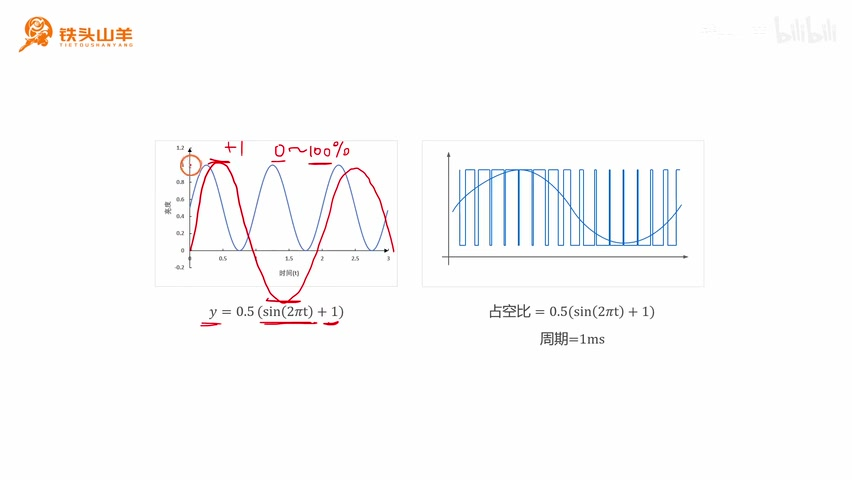
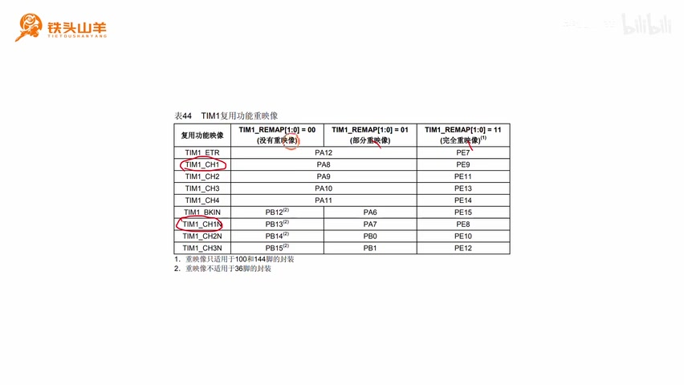
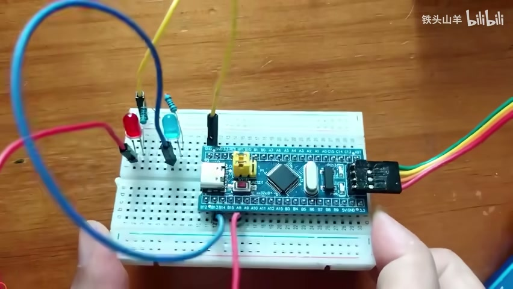
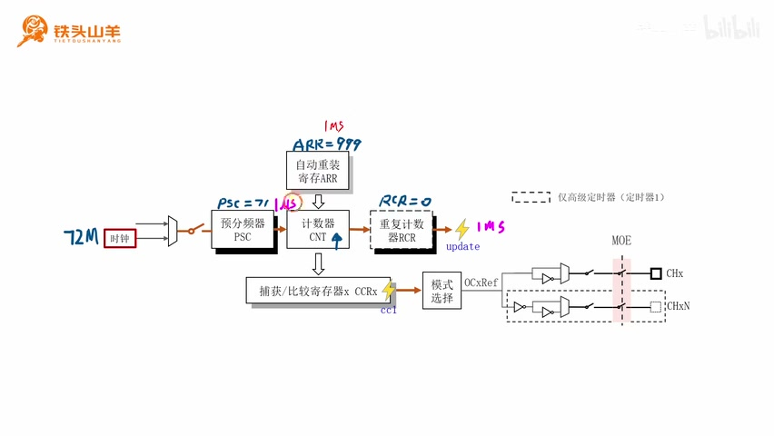
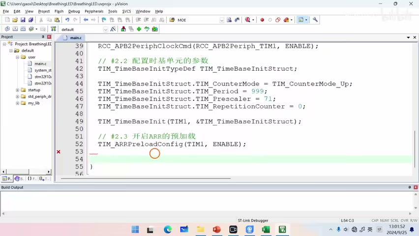
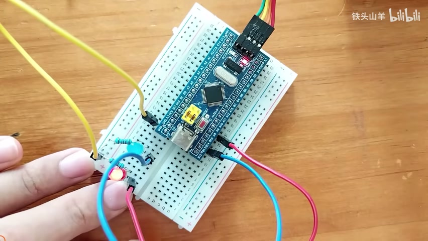

P043 · 9.4 （定时器）呼吸灯实验¶
实验目标与亮度曲线¶
各位同学大家好，我是铁头山羊，今天我们要学习的是第九章的第四节，首先我们先来回顾一下在上期视频的过程中呢。
我们讲了这个定时器的输出比较，那通过上期视频的学习呢，我们只是了解了这个输出比较的一个理论知识，所以本节课呢我们就做一个简单的实验。
就是这个呼吸灯实验，我们通过这个呼吸灯实验，来看一下这个输出比较，在实际编程的过程中是如何写代码的。
首先呢我们先来看一下本次实验，我们要达到的一个实验效果，我们需要在这个面包板上呢放这么两颗led，一颗红色的led。
一颗蓝色的led，这两颗led呢，就是我们开发套件包里面的那两颗led，然后呢。
我们把它们分别连接在，我们TIM1的通道一上，其中这个红色的LED呢，连接的是通道一的正常输出。
然后这个蓝色的LED呢，连接的是它的一个互补输出，我们通过TIM1的通道一，产生这个一组互补的PWM信号。
去驱动这两个LED，然后我们调节这个PWM信号的占空比，就可以让这个led能出现一个明暗的变化，我们就可以实现一个呼吸灯的效果。
本次实验呢我们分这么五个步骤来讲，首先呢我们先通过第一部分，先简单的了解一下这个呼吸灯的一个工作原理，现在呢我们来思考一下。
我们该如何去实现这个呼吸灯的效果呢，其实我们要实现这个呼吸灯的效果啊，就得让这个led的亮度连续变化，比如说一会亮一会暗。
一会亮一会暗，唉成这么一个关系去变化，我们来看一下这条曲线，是不是就特别像我们数学里面的学习的。
这个正弦函数啊，比如我们设这个正弦函数的表达式是，y = sin(2πt)，这个y = sin(2πt)呢。
就是一个标准的正弦函数，那他的这个频率呢其实就是一赫兹对吧，这就是一个一赫兹的标准正弦函数，然后我们画一下。
这个y = sin(2πt)的这么一个图像，那它的图像呢是这样的。
从图像里面我们可以看得出来，这个y = sin(2πt)呢，它的取值范围是从 -1 到 +1 之间，而我们要求这个亮度的变化范围呢。
一般是从零到百分之百，也就是0 到 1就是全暗，百分之百呢就是全亮，所以呢我们得把这个函数给它移动一下。
首先呢我们先给这个函数加上一个一哈，加上一个一之后。

将正弦曲线上移并缩放到 0–1 后，右侧 PWM 占空比随曲线变化。 · 原片 02:25
我们就把它移动到上面来了对吧，那现在呢它的范围就是从0~~2之间了对吧，0~~2之间，然后呢我们需要把它搬到0\~1之间。
所以呢我们再给它乘以一个0.5，乘以一个0.5之后，我们就得到了这么一个图像，所以下面我们的任务就是让这个led的亮度呢。
按照这么一个函数进行变化，我们要想让这个led的亮度呈现这么一个变化，那么我们是不是就得让加在这个LED两端的，这个电压呈现这么一个函数的关系去变化呀。
但是我们知道我们这个STM32呢，它只能输出两种电压，要不然呢就是输出高电压3.3伏，要不然呢就是输出低电压零伏。
那它怎么输出这种连续变化的电压呢，这个时候呢我们就想到了上期视频，我们学过的知识，就是上期视频我们学过这种PWM波。
我们可以通过调节这个PWM的占空比呢，来模拟出这么一个正弦信号，当这个我们要求输出的这个电压幅度高的时候，我们就把这个占空比调大一点。
当它我们输出的这个幅度低的时候，我们就把这个占空比调小一点就可以了，所以呢我们只需要让这个占空比，按照左边的这个Y等于sin。
然后对于我们的这个PWM信号来说呢，它除了有占空比这个参数之外，还有这个周期的这么一个参数，所以周期呢就是就是从这里到这里之间的距离。
那这个距离取多少呢，我们随便取一个值啊，比如说我们取一毫秒，那下面呢我们的任务就是去配置这个定时器。
让这个定时器呢输出这么一个PWM波。
选择 TIM1 通道并接线¶
然后这个PWM波的周期呢是一毫秒，占空比呢按照这个规律去变化，然后我们把这个PWM波呢加到这个led上，我们就可以实现这个呼吸灯的效果了。
通过刚才的讲解呢，我们已经大概的了解了，这个呼吸灯的一个基本工作原理，下一步呢我们就是要使用这个定时器。
去产生这个PWM信号，比如说我们使用TIM1哈，首先第一步，我们先来初始化一下。
这个定时器的一个IO引脚，那怎么去初始化这个IO引脚呢，比如说我们来看这么一张图啊，我们假设这张图呢是TIM1的一个。
内部结构框图，因为接下来呢我们要使用这个TIM1，然后这个TIM1呢有下面这么四个通道，那这每一个通道呢都具有这个输出。
比较的这么一个功能啊，这四个通道呢都是可以产生PWM信号的，我们从中任意选择一个通道，比如说我们选择这个通道一。
然后呢我们拿出这么两颗led哈，其中这个红色的led呢，我们就把它连接到这个通道一的正常输出上，然后这颗蓝色的led呢。
我们就把它接到这个互补输出上，那一个是正常输出，一个是互补输出，这两个波形呢正好是相反的。
所以我们就可以看到左边这个灯亮的时候，右边的就暗，左边的这个灯暗的时候呢，右边呢就亮了。
这样呢它们就会呈现一个明暗交替的变化，那既然如此呢，所以本次实验我们需要使用到这么两个引脚，所以下面我们的任务呢就是第一步。
先把这两个引脚的位置找到，然后第二步呢再对这两个引脚进行初始化，要想定位那两个引脚的位置呢，我们就得拿出我们之前总结的这么一个excel表格。
这个excel表格呢，就表示我们使用的这个单片机的一个引脚分布，然后在这个表格里面呢，我们打开关于定时器的这么一页。
我们可以看到这个定时器的这一页呢，左边有很多表对吧，这四张表呢分别代表这四个定时器，这是TIM1的引脚分布。
这是定时器二的引脚分布，这是定时器三的引脚分布，这是定时器四的引脚分布，那我们使用的是这个TIM1。
所以我们就把这张表呢给它拿出来。
我们来仔细看一下这张表哈，对于这个TIM1来说呢，他有这么多个引脚，首先呢这里是ETR。
这个ETR呢就是外部触发输入，然后这里是break in，这个是一个刹车信号，那除此之外呢。
这些都是通道的一个信号，比如说这是通道一的正常输出，这是通道一的互补输出，这是通道二的正常输出。
这是通道二的互补输出，这是通道三的正常输出，这是通道三的互补输出，然后这是通道四的一个正常输出。
我们要使用的是这个通道一，所以我们用的是这两个引脚哈，我们来看一下啊。

TIM1 通道 1 默认输出映射为 PA8，互补输出映射为 PB13。 · 原片 06:40
这个定时器的它的引脚呢有两种不同的重映射，如果我们不进行重新设的话，那么这个通道一的正常输出呢，在这个PA8互补输出呢。
在PB13，如果我们使用这种部分重映射的话，那么PA8还在这个位置保持不变，然后 PB13 会被重映射到 PA7。
然后还可以进行完全重映射。如果完全重映射，这组引脚会移到 PE7、PE9、PE13、PE14、PE15 等引脚上。
而我们使用的单片机只有 GPIOA、GPIOB、GPIOC、GPIOD 四组 GPIO 端口，对吧。
它没有 GPIOE，所以这组完全重映射对我们的单片机不适用，然后呢这个IO重新设呢。
我们已经练习过很多次了，本次实验呢我们就不再使用这个重新设了，我们直接用默认的这个引脚就可以了，所以呢我们这个通道一正常输出呢。
我们就把它放在PA8，然后通道一的互补输出呢，我们就把它放在PB13，我们按照这两个位置去设置我们的IO引脚。
所以呢这个引脚是不是就是PA8呀，下面的这个引脚是不是就是PB13，然后呢我们往这个PA8这个引脚上呢，接这么一颗红色的led。
中间加一颗限流电阻，这个led的阴极呢给他接地，然后这个引脚呢PB13，我们连一颗蓝色的LED也是。
这里加一个限流电阻。
初始化输出引脚¶
那这里呢给它接地，我们就按照这个电路图来转化成我们的接线图，那这张图呢就是我们最终要的一个接线图，我们按照这个接线图呢去连接电路。
然后连接电路的过程中呢，大家需要注意哈，我们这个LED这个led呢是有极性的，它左边这里的这个长角呢是正极。
我们需要让这个正极朝左啊，千万不要连错了。

面包板上的红、蓝 LED 与开发板连接，LED 正极方向按接线图摆放。 · 原片 08:34
那这个呢就是我们电路连接好之后，的一个最终的效果，大家可以对比一下，看看自己的电路呢有没有连对。
是这样的，那找到了这两个引脚的位置，并且把它们连接到电路上之后，下一步呢我们就应该考虑一下。
如何去初始化这两个引脚了，我们应当使用什么样的参数，对这两个引脚进行初始化，要想解答这个问题呢。
我们还是回到我们刚才的那个excel表格，我们在这个excel表格的右边这个位置呢，看到这里有两张表，表19和表20。
其中这个表19呢是关于高级定时器，TIM1和定时器八的这么一个引脚的模式，然后表20呢是关于这个通用定时器，234的这么一个表。
因为我们使用的是TIM1，所以呢我们看上面的这个表19，我们来仔细看一下这张表哈，首先呢我们先来看一下这个表的第一列。
也就是表头这一列，那表头这一列呢，表示我们这个定时器有这么四种不同的引脚哈，这个呢是表示CHX也就是正常输出。
这个呢是CHXN，表示这个通道的一个互补输出，然后下面的这个break input呢，这个是刹车。
这个ETR呢是外部触发输入，我们要用的是正常输出和互补输出，所以呢我们只观察前两行就可以了，我们先来看一下这个正常输入CHX。
这个CHX呢有两种配置啊，一种是作为这个输入捕获来用，另一种呢是作为输出比较来用，当然呢。
我们本次实验呢，用的是这个输出比较的功能对吧，所以呢我们看下面的这一行，那下面这一行呢。
他说我们的这个正常输出呢。
应当配置为这个复用输出推广模式，也就是AF_PP，然后我们再来看一下这个互补输出哈，这个互补输出呢就只能配置为这个复用输出。
推广模式也是这个AF_PP，所以这个pa8和PB13呢，都应该配置成这个AF_PP的模式，这个AF_PP模式呢既然是一种输出模式。
我们还需要配置这个引脚的一个最大输出速度，那最大输出速度应当选多少呢，我们知道哈，我们这个PWM信号。
刚才我们设置的这个周期呢是一毫秒，所以它的频率换算过来就是1000HZ，那1000HZ呢其实是一个比较低的频率，所以我们选择这个两兆赫兹的最大输出速度。
就足够用了，因为这个两兆赫兹呢是不是就等于2000K啊，2000K比这个1K呢大多了，所以我们最终选择的这个参数呢。
就是模式都是AF_PP，然后最大输出速度呢都选这个两兆赫兹，那下面呢我们来写一下这部分代码啊，首先我们先拿出我们的这个模板工程。
我们把这个模板工程呢给他解压，然后我们给这个模板工程重新起个名字，比如说叫做brazen light吧，嗯brain LED啊。
呼吸灯吧，然后我们打开这个文件夹哈，给里边的这个工程文件也给他重新起个名字，也叫这个名字。
然后我们双击打开这个工程，在这个工程里面呢，我们首先打开default文件夹，然后打开user文件夹。
双击打开main.c，我们把这个代码呢写在我们的这个main.c，这个文件里面，首先呢为了让我们这个代码写的更工整。
我们先声明一个函数，比如说叫做app p大m in it嗯，这个函数呢就是用来初始化，我们这个PWM波的一个产生的。
然后我们对这个函数进行一个实现，那实现这个函数的时候，我们分这么几步哈，首先第一步我们就是初始化IO引脚对吧。
要初始化的这个IO引脚呢，就是PA8和PB13，首先我们先来初始化这个pa8吧。
配置定时基准单元¶
嗯我们先开启GPIOA的一个时钟，嗯这样呢就把这个GPIO的时钟给他打开了，然后呢我们声明一个这样类型的一个变量，这个代码我们写过很多次了。
嗯相信这个代码大家闭着眼都能写的出来了，写了好多次了，然后嗯这个引脚呢就是GPIO_Pin8对吧，模式我们刚才说了。
这个PA8应该是AF_PP对吧，所以他的模式呢就是GPIO_Mode a f p p，这就是它的模式，然后最大输出速度我们刚才也说了。
就是两兆赫兹，最后呢我们调用这个GPIO_Init，对这个pa8呢做一个初始化，这样呢我们这个pa8就初始化完了。
然后我们在初始化PB13，那代码呢几乎是一样的，我们直接复制粘贴嗯，改一下参数啊。
这个PB13的端口呢是GPIOB啊，这一行呢这个声明我们就不用要了，然后这里的这个引脚的编号呢，我们改成13下面的这个端口号呢。
我们也改成GPIOB，这样呢这个代码就写完了，我们最好把这个呃变量的声明呢往上放一点嗯，这样更符合我们代码编写的一个习惯啊。
变量声明放上边嗯，这样我们代码就编写好了，那初始化完这个L引脚之后，下一步呢。
我们就去配置我们定时器的这个定时单元，那关于这个定时单元呢就是这么一个结构对吧，关于这个TIM1 定时单元的配置的代码呢，我们之前已经讲过了。
这里呢我们简单来回顾一下，首先我们先来回顾一下，我们这个呼吸灯的一个产生原理，那我们想要实现这么一个呼吸灯的效果。
是不是我们就需要使用这么一个PWM信号，去驱动那颗LED啊，然后我们这个PWM信号刚才我们说过哈，它的指标是这样的。
我们要求它的周期呢设置成一毫秒。
占空比呢我们要按照这个公式去变化，那我们怎么去产生这么一个PWM信号呢，这个时候呢，就需要用到我们定时器的这么一个输出。
比较功能，我们需要拿计数器CNT的值，跟这个CCR的值进行比较，也是这么一条线。
当这个CCR的值，CCR的值比这个CNT的值要大的时候呢，我们输出的就是一个高电压，否则呢输出的是一个低电压。
通过这种形式呢，我们就可以产生这种信号了，然后呢我们这个ARR也就是自动重装寄存器的，这个值呢。
其实决定的是我们这个定时的一个周期对吧，它也就决定了这里的这个PWM信号的一个周期，然后这个CCR的值也就是这个寄存器的这个值，它就决定了我们高电压所占的时间。
其实也就间接的决定了我们这个，PWM信号的一个占空比，所以下面呢我们先来设置一下，这个PWM信号的一个周期哈。
也就是通过配置这里的定时单元，来配置它的周期，我们需要让这个计数器CNT呢，每一毫秒溢出一次。
然后还有一个附加的要求哈，就是让这个这里的这个定时器的这个分辨率呢，我们设置成一微秒，我们按照这个指标去初始化。
我们的这个定时单元，下面呢我们来分析一下，我们怎么实现这个分辨率一微秒，周期一毫秒的这么一个效果哈。
首先我们从左往右看，我们先来看一下这个时钟频率，首先我们分析一下这个输入到TIM1的，这个时钟频率到底是多少。
我们这个TIM1，我们知道他是挂载在APB2总线上的，如果你不相信，你可以去查一下那个数据手册。
他就是挂载在这个总线上的，然后呢他就从PCLK2去获取时钟，他需要在这个PCLK2的基础上呢，再乘以一个倍频系数一或者是二。
这个PCLK2的频率呢其实是72兆赫兹，然后当前这个APB2的分频系数呢是一分频，所以我们选的这个倍频系数呢也是一倍频，所以我们用这个72兆赫兹乘以一。
那得到的这个定时器，一的频率呢就是72兆赫兹。
所以这里呢是72兆赫兹，那既然这里的这个频率是72兆赫兹，所以这里的这个频率是不是，也是72兆赫兹啊。
而我们要求的这个分辨率呢是一微秒一微秒，如果折算成频率的话，就是一兆赫兹，所以我们需要对这个72兆赫兹呢。
做一个除法，就是用这个预分频器对它进行分频，我们除以多少呢，就是除以71+1。
72÷72，是不是就是一兆赫兹了，所以这个PSC的值应当是被设置成71，然后呢我们这个计数器的计数方向。
我们选择上计数哈，我们的这个技术方向呢有上级数，下级数和中心对齐，后边呢这两种呢用的比较少。
所以我们直接选这个上级数就可以了，再然后呢我们再设置一下这个定时周期。

TIM1 定时单元采用 PSC=71、ARR=999、RCR=0，得到 1 μs 计数分辨率和 1 ms 周期。 · 原片 16:58
也就是这个ARR 寄存器，我们这个定时周期呢要求是一毫秒对吧，一毫秒呢就是1000倍的一微秒，所以我们这个AR的值呢应该设置成1000-1。
这个值呢就是999，这样呢我们就可以让这个计数器，每一毫秒溢出一次了，然后右边这里呢还有一个重复计数器RCR。
这个重复计数器RCR呢是用虚线标起来的，说明了他只有高级定时器才有，而我们今天使用的这个定时器呢，恰好就是这个TIM1。
也就是一个高级定时器对吧，所以呢它是有这一部分功能的，所以我们需要对这个RCR进行配置，我们直接把它配置成零就可以了。
也就是这边每溢出一次产生一次update事件，所以下面呢我们就按照刚才的这个要求，去初始化我们这个实习单元，我们这个初始化的动作呢主要分成这么四步。
第一步，第二步，第三步，第四步。
我们首先来看第一步哈，第一步就是开启一下这个TIM1的时钟，因为这个TIM1呢，是挂载在这个APB2总线上的。
所以呢他使用的这个编程接口呢，就是RCCABB2，Prefer clock c m d，我们顺着刚才的代码往下写哈。
刚才呢我们进行了第一步，也就是初始化这个IO引脚，第二步呢我们就是配置定时单元。
然后第2.1步嗯，就是开启TIM1的时钟，R c c a p p 2prefer clock，c m d r c c a b b r preferTIM1enable嗯。
这样呢这个时钟就开起来了，开完了这个时钟之后呢，下面我们进行第二步，第二步呢就是去配置这个定时单元的一些参数。
那这些参数呢就包含了这么几个，首先呢是这个PSC的值71，然后AR的值呢999，计数器的计数方向呢上计数。
然后还有这个RCR的值呢，我们设置成零，那怎么去配置这些参数呢，我们用到这么一个编程接口啊。
之前我们学习过就是这个TIM_TimeBaseInit，这个专门用来初始化这个定时单元，下面呢我们就来写一下这部分的代码，第2.2部配置定时单元。
的参数嗯，我们要调用这个tm time base in it对吧，那这个编程接口呢，它后边需要这么一个类型的参数。
首先我们先声明这么一个类型的变量哈，这种类型的，然后随便起个名字，嗯然后我们给这个变量里边的所有的成员。
都给它赋值，首先这个clock division我们不用管，counter mode呢，就是技术方向。
技术方向我们当然是上级数，这个就是上级数，然后period period就是AR的值，也就是我们的这个定时周期。
我们填999，然后PRECULARPRESULAR呢就是预分频器PSC的值，这个呢我们填71，刚才我们都分析过了。
最后一个呢就是reputation counter，也就是RCR的值，RCR我们填零，然后我们调用一下这个编程接口。
把这个参数给他传进来啊。
这样呢我们这个参数就配置好了，配置完这个第二步之后，我们再来看一下第三步，第三步呢。
其实是我们之前讲的时候讲漏的一个知识点，我们来看一下哈，对于我们的自动重装寄存器，预分频器和重复计数器RCR呢。
他后面都有这么一个阴影对吧，这个阴影大家还记得它表示什么吗，就是表示我们寄存器的一个预加载，这个预加载功能呢。
可以防止我们定时器的一个跑飞，所以呢一般情况下，我们都是去启用这个预加载的，我们来看一下啊。
对于这两个寄存器来说，它后面的这个阴影都是深黑色的，就表示这两个寄存器呢，它们的预加载啊都是开启的。
而对于上面的这个自动重装寄存器ARR来说呢，它的这个阴影是灰色的，表示它的预加载呢默认是关闭的，我们需要手动去开启它。
为了防止这个定时器跑飞呢，我们一般是使能它的预加载的，所以我们手动的去开一下它的预加载，那么为此我们需要学习一个新的编程接口啊。
就是下面的这个编程接口 TIM_ARRPreloadConfig。ARR 指的就是 ARR 寄存器。
PRELOAD呢就是预加载的意思，CONFIG呢就是配置的意思，所以这个编程接口的作用呢，就是去配置ARR 寄存器的一个预加载。
它有一个 NewState 参数，填 ENABLE 表示使能预加载。
如果填的是disable呢，就表示禁止预加载，那下面呢我们就使用这个编程接口，去开启ARR 寄存器的一个预加载。
我们接着这个代码往下写，第2.3步嗯，开启a arr的预加载，TIM_ARRPreloadConfig嗯。
第一个参数填 TIM1，第二个参数填 ENABLE。

代码依次配置 TIM1 时钟、定时基准、ARR 预加载和计数器使能。 · 原片 22:00
这样呢这个预加载就开好了，然后经过这三步之后呢，我们这些所有的参数是不是都配好了，最后一步呢我们需要闭合这里的这个开关。
只有闭合了这个开关，这个时钟信号是不是才会进来。
配置 PWM 输出比较¶
我们这个TIM1 定时单元才会开始工作，所以最后一步呢就是去闭合这个开关。我们用之前学过的编程接口 TIM_Cmd。
这个CMD呢就是开关的意思，它的作用呢就是去控制上面的那个开关，所以呢第2.4步闭合定时单元的开关，TIM_Cmd(TIM1, ENABLE)。
这样呢这个开关就给它闭合了，经过了1234这么四步，我们整个这个TIM1 定时单元就配置完了哈，所以剩下的任务呢。
我们就是去配置下面的这里的这个输出，比较这一块的框图了，所以呢第四步，我们一起来配置一下这个输出比较的参数。
我们来分析一下这个输出比较的参数，应该怎么去配置啊，这一部分呢就是我们输出比较的这个电路，然后呢这个电路可以分成这么几个部分啊。
我们嗯从左往右看吧，首先看最左边，这里这里呢是一个捕获比较寄存器，这个寄存器呢既能被输入捕获使用。
也能被输入比较使用，当它用作输出比较的时候呢，这个寄存器呢就用来控制，我们这个信号的一个占空比。
我们让这个占空比呢按照这个公式去变化，但是呢我们在一开始的时候呢，需要给它赋一个初值哈，我们比如说我们像这个嗯。
CCR寄存器里面写一个零啊，一开始的时候它是零，也就表示占空比一开始是0%，然后右边这里呢有一个模式选择。
这个是用来选择，我们嗯这个输出比较的一个模式的，总共有八种模式，它八种模式里面呢只有两种模式是常用的。
一个是PWM1，另一个是PWM2，这个我们这次呢用的是这个PWM1，所谓的PWM1呢。
就是让计数器CNT的值，跟这个CCR的值呢做比较，当计数器CNT的值小于CCR的时候，输出的是高电压。
否则呢输出的是低电压，就是这么一种模式，我们这里呢就选择这种PWM1模式，然后经过这个模式选择之后。
会产生一个这么一个参考信号，然后这个参考信号呢分成两路，上面这一路呢是正常输出。
下面这一路呢是互补输出，往后走呢，这里有一个极性选择，我们需要为这个正常输出和互补输出呢。
都选择它的极性，比如说我们都选择正极性，选择正极性之后呢，这个正常输出就等于这个参考信号。
而互补输出呢正好是这个参考信号取反，因为这里有一个反向器对吧，然后我们需要闭合这里的这两个开关，这两个开关呢分别用来控制。
我们这个正常输出和互补输出的一个势能，最后呢右边还有这么两个开关，这个开关呢关系到这个MOEMOEE，也就是主输出势能。
只有我们使能了这个主输出，那这个定时器的所有通道的信号呢，才能够被使用，所以呢我们就按照这些参数去配置。
我们的这个输出，比较这个模块，然后我们这个初始化的步骤呢可以分成两步，首先这里是第一步。
也就是去配置这边的这些参数，这是第一步啊，然后第二步呢，我们就是去闭合右边的这个。
MOE的这个主开关，这是第二步，我们先来做这个第一步哈，也就是配置左边的这些参数。
那么为此呢我们需要学习一个新的编程接口，这个编程接口呢叫做TIM_OC1Init，其中这个OC呢是output compare的一个缩写，代表了就是输出比较。
然后这里的一呢代表的是通道一，因为我们使用的这个通道呢是通道一对吧，然后这个INIT呢是初始化的意思，所以呢我们这个编程接口的作用呢。
就是去初始化输出比较通道一的一个参数，然后这个编程接口呢有这么两个参数哈，前面这个参数呢填的是这个定时器的名字，这个我们就不多讲了。
后面这个参数呢，它是一个这种结构体指针类型的，它就是一个初始化的参数列表，这种形式呢我们一个已经用过很多次了。
那下面呢我们就按照这个编程接口呢，对我们的左边这一部分进行初始化，下一步是第三步，第三步我们要做的是初始化输出比较。
第3.1初始化输出比较通道一的参数。
我们要调用的这个编程接口，就是TIM_OC1Init，那这个编程接口，它要用到这么一个结构体类型的变量对吧。
首先我们先声明这个结构体类型的变量，TIM_OCInitTypeDef 这么一个结构体类型的，然后变量的名字呢随便起，啊他有很多参数啊。
我们逐个参数来看一下，首先呃第一个参数呢我们用不到，这个参数跟一个高级输出功能有关，我们用不到。
第二个参数呢是oc mode，这个o c mod呢就是用来配置这个输出比较的，一个模式的，有八种模式对吧。
那本次呢我们选择的这个模式呢，是这个PWM1嗯，所以我们看一下tm oc mode，他有这么几种模式哈。
Active 就是强制有效，Inactive 就是强制无效，这个是 PWM1，这个是 PWM2。
呃这个呢暂时不清楚，这个呢是是翻转模式，我们选的就是这个PWM1，那我们再来看下面这个参数嗯。
TIM_OCNIdleState 这个高级输出参数本次用不到，然后嗯下面这个是 TIM_OCNPolarity；N 代表互补通道。
然后polarity呢代表极性，所以这个参数呢是用来设置，我们这个互补通道的一个极性的，我们这个极性呢有两种可选啊。
一个是高级性，一个是低级性，高级性呢就代表正，低级性呢就代表负。
我们这个极性的都选正就可以了，然后再往后看，下面是 TIM_OCPolarity，
就用来设置正常输出的这么一个极性，这个极性呢我们也选正哈，就是 TIM_OCPolarity_High。
再往后是 TIM_OutputNState，用于设置互补通道下方开关是闭合还是断开。
就是用这个就是用这个去去配置的，我们填这个enable呢就是闭合开关，填disabled呢就是断开开关，我们当然是闭合这个开关。
因为我们要使能这个互补输出对吧，那倒数第二个参数呢就是这个output state，这个参数用来控制正常输出的上方开关，填 TIM_OutputState_Enable 就是闭合。最后一个参数 TIM_Pulse
其实用来设置我们这个输出呃，这个捕获比较寄存器CCR的这个初值，初始值呢我们设置成零，所以这里呢我们填零。
这样所有的参数都填完了，那填完之后呢，我们把它放进去，取地址放进去。
然后这个额通道一的这个参数呢，我们就配置好了，然后最后一步呢我们就是去闭合MOE，这里的开关。
也就是我们要学习一个新的编程接口，就是 TIM_CtrlPWMOutputs，这个就是用来啊控制断开。
或者是闭合这个MOE的一个开关的，然后呢他后边有一个参数new state，如果这个new state填的是INA保的话，就是闭合MOE。
否则的话就是断开这个MOE，我们接着写第 3.2 步，使能 MOE 总开关：TIM_CtrlPWMOutputs(TIM1, ENABLE)。这样初始化代码就写完了，然后我们把这个初始化的代码。
放到这个main方法里面去调用一下，那初始化完这些参数之后呢，我们需要让这个PWM信号的占空比呢，随时间按照这么一个公式去变化。
所以第五步，我们要做的就是动态的改变pr m的占空比啊。
按时间计算并更新占空比¶
这里呢我们再补充一下哈，刚才我们又漏讲了一个地方，就是我们现在需要去动态的改变占空比，也就是去动态的改变这个CCR的值对吧。
因为这个CCR是有预加载的，而且呢它后边的这个阴影也是一个灰色的阴影，说明它的这个预加载呢默认是关闭的，所以我们既然要动态的去改变它。
所以我们最好是使能它的这个，预加载的一个功能，我们还是回到这个初始化的这个代码哈，我们添加一行。
比如说把它写在最后吧，其实位置没所谓嗯，我们写 TIM_OC1PreloadConfig，用来控制 CCR 寄存器的预加载。Preload 是预加载，Control 是控制。它有两个参数：第一个填 TIM1，第二个填 TIM_OCPreload_Enable，这样就开启预加载。，我们继续再回到刚才的这个PPT哈。
我们刚才分析过，我们要实现这个呼吸灯的效果，是不是就得让这个PWM的占空比，按照这么一个正弦的关系去变化。
而在这个正弦函数里边，我们看这里有一个T，这个T呢就代表我们单片机的一个当前时间，所以第一步呢。
我们先来获取一下这个单片机的当前时间T，怎么去获取这个单片机的当前时间T呢，我们想了这么一个办法哈，我们看一下 my_lib 文件夹。里面有一个delay.h，这个delay.h里边是不是有个函数叫做GetTick啊，这GetTick，就是用来获取这个单片机的当前时间的。
所以我们用它就好了，所以回到 main.c 顶部，先包含 delay.h。
我们在这个while循环里，我们把程序写到while循环里，在这里呢去获取一下当前的时间，这个就是T它就等于啊用一个float类型吧。
它就等于 GetTick()。GetTick 获取的是毫秒值，所以再乘以 1.0e-3f 转成秒。
这个就是时间T，刚才呢我们已经获取了这个当前时间T，有了这个当前时间T之后，是不是。
我们就可以根据这个公式来计算这个占空比，来我们在程序里面声明一个变量duty，这个duty呢就是占空比的意思，我们用它来存储这个占空比的一个值。
所以可以这样写：float duty = 0.5f * (sin(2 * 3.14f * t) + 1.0f);。乘在前面或后面都一样。
然后因为我们这个公式里边使用了正弦函数，Sin，所以我们得引用一下math.h这个头文件，我们来到这个文件的顶部。
引用一下这个math.h，sin 函数就在 math.h 里，这样呢我们这个占空比就算出来了，有了这个占空比之后呢。
我们再来算一下，这个CCR1的这个值应当是多少，也就是这个寄存器的值应当是多少，我们来看啊。
这个CCR的值呢其实决定的不是这个占空比哈，而是这个高电压所占的时间，所以呢我们需要用这个周期的长度，也就是1000去乘以这个占空比的值。
最终得出来的才是这个CCR的值，所以呢我们可以看到这个CCR呢，就等于占空比乘以1000，我们继续往下写哈。
先声明一个 16 位无符号整型变量保存 CCR1 的值：uint16_t ccr1 = duty * 1000;。
那这就是CCR1的值，最后呢我们需要把这个CCR1的值，给它设置到这个定时器里面，那怎么把算出来的这个值设置到这个CCR1。
这个寄存器里面呢，这里呢我们需要学习一个新的编程接口，就是下面的这个编程接口叫做TIM_SetCompare1，这个compare呢就是比较的意思。
它就是用来设置这个捕获，比较寄存器一的这么一个值的，那这个一呢代表的是通道一哈，如果我们想要设置这个CCR2的值。
那么这里就填二就可以了。
编译、下载与现象¶
以此类推，那这个编程接口呢它后边有这么两个参数，首先第一个参数呢这个填TM1就可以了，TIM1。
第二个参数呢就是我们算出来的这个CCR的值，我们来写一下这个代码哈，TIM_SetCompare1，大家看这里有四个函数哈。
set compare1就是CCR1，这个就是CCR2，Ccr3，Ccr4。
我们要设置的是 CCR1，所以选 TIM_SetCompare1，并将算出的 CCR1 值作为参数。
我们刚才算出来的那个值，这样呢我们整个这个程序呢就写完了，那写完了这个程序之后，我们按左上角的第二个按钮进行编译。
看一下这个程序有没有问题啊，这个程序是没有问题的，没有错误，也没有警告。
这程序语法是没问题的，我们再来看一下实际执行的效果怎么样，我们按这里的这个下载按钮，把程序下载到单片机当中哦。
我这个调试器没连哈，我把这个调试器插上嗯，再下载一次，OK好的。
下载好了，我们按一下这个单片机的复位按钮哈。

复位后，面包板上的红灯与蓝灯交替发亮，实验现象出现。 · 原片 35:28
还可以看到这个实验现象就出来了，这红灯和蓝灯的交替闪烁，这个就是我们最终的一个实验，效果好的。
到此为止呢，本期视频的所有内容就都讲完了，本期视频呢我们通过一个简单的小实验，来复习了一下。
上期视频我们学过的这个输出比较的一个原理，好的本期视频的内容就到这里，感谢大家的收看，我是铁头山羊。
让我们下期视频再见。